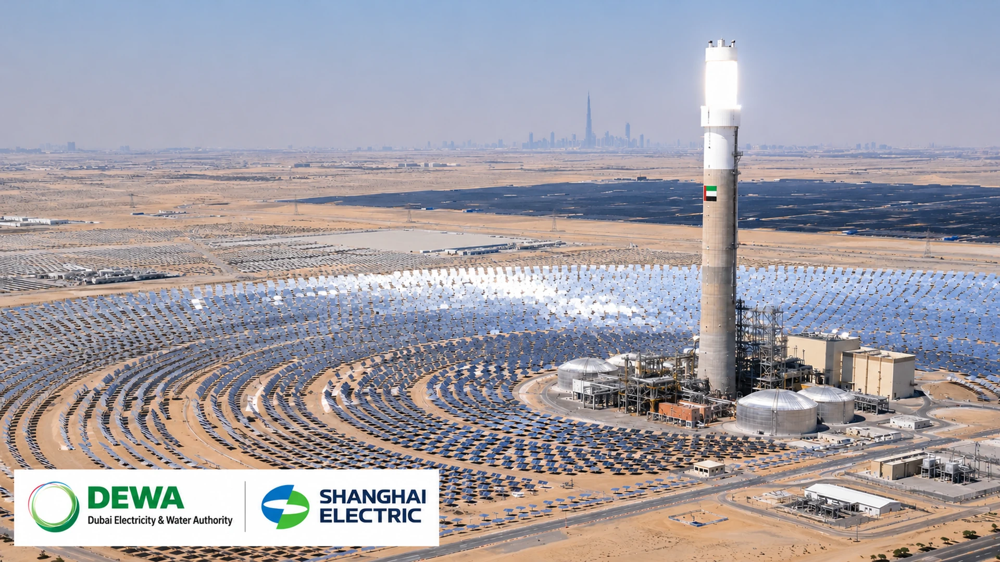

DEWA International and Shanghai Electric Target Global Energy Projects in New Partnership
Dubai's utility investment arm and Chinese engineering group agreed to explore energy, water and infrastructure opportunities overseas, but the memorandum contains no announced project awards or financial commitments.

DEWA International and Shanghai Electric signed a memorandum to explore overseas energy, water and infrastructure projects, according to an announcement on November 1. The agreement covers potential project development and bidding opportunities. Neither company announced an awarded contract or financial commitment tied to the memorandum.
The agreement, announced on November 1, brings together DEWA International, the global arm of Dubai Electricity and Water Authority, and Shanghai Electric. According to the Emirates News Agency, the partners will identify, evaluate and develop prospective investments, including participation in competitive tenders. Their scope extends beyond renewable electricity into desalination, conventional power generation, electricity networks and emerging low-carbon fuels.
The agreement pairs DEWA International's project-development experience with Shanghai Electric's engineering and equipment capabilities. For investors, however, an important distinction applies: a memorandum of understanding creates a route to future business, not confirmed revenue. Neither a specific overseas project nor a contract value was disclosed in the announcement.
An unusually broad cooperation framework
The companies have identified combined-cycle gas-fired power plants, solar photovoltaic projects, concentrated solar power, wind farms and battery energy storage systems among potential areas of cooperation. Seawater desalination and electricity transmission and distribution are also included. In addition, the agreement covers green hydrogen, green ammonia and the supply of equipment and services to oil and gas projects.
That mix reflects the practical demands of electricity and water systems rather than a single-technology bet. Solar and wind can provide low-carbon generation, while batteries and dispatchable power capacity help address variability and peak demand. Desalination adds another infrastructure requirement in water-stressed markets, but it can also be energy-intensive, making the design of generation and water assets an interconnected investment decision. For additional industry context, see TTN Finance analysis of US gas-power investment.
The two parties may work together on project identification, technical and commercial assessment, project structuring, tender participation and potential investment. The precise division of responsibilities, financing approach and ownership shares would still need to be agreed for individual projects.
Why the partnership has commercial logic
DEWA brings utility planning, large-scale procurement and experience overseeing complex energy and water infrastructure in Dubai. Shanghai Electric contributes industrial engineering, equipment manufacturing and power-project delivery capabilities. Combining those strengths may help the companies compete for projects whose sponsors want both technical execution and a credible operating or development partner.
The relationship is not starting from scratch. A consortium led by Shanghai Electric served as the main contractor on the fourth phase of Dubai's Mohammed bin Rashid Al Maktoum Solar Park. In an October 2025 statement, DEWA described that phase as a 950-megawatt combination of concentrated solar power and photovoltaic generation with an investment of AED 15.78 billion. That completed relationship offers relevant context, although the project's historical budget must not be confused with spending under the newly announced memorandum.
DEWA International has also been expanding its roster of counterparties. In October 2026 it announced separate memoranda with EDF Power Solutions, China Energy International Group, Capital Dynamics and Tata Consultancy Services. Those agreements address investment, engineering and technology cooperation in different parts of the infrastructure market. The Shanghai Electric announcement therefore fits a broader effort to build a global development pipeline rather than representing a stand-alone expansion into a new industry.
What investors should—and should not—take from the announcement
A cooperation memorandum can improve access to bidding opportunities, but it does not establish that a project will be financed or built. The commercial significance of this agreement will become clearer only if the companies identify target countries, announce tender wins, form investment vehicles or disclose binding contracts. For additional industry context, see TTN Finance coverage of BP’s energy investment outlook.
Project economics will depend on local regulation, the creditworthiness of electricity or water buyers, currency exposure, construction costs and the cost of financing. These factors can differ substantially across international markets. Capital-intensive technologies such as concentrated solar power, desalination and hydrogen infrastructure can require particularly careful assessment of long-term contracts and expected utilisation.
Green hydrogen and ammonia are strategically prominent in the partnership's scope, but those businesses remain especially sensitive to demand certainty and production economics. The inclusion of a technology in a memorandum should not be read as evidence that a bankable project or customer contract already exists.
Likewise, there is no disclosed new revenue guidance for Shanghai Electric, no announced incremental earnings for DEWA and no verified investment budget attached to this specific agreement. Any market valuation conclusion would be premature on the available information.
The next milestones
The immediate indicators to watch are named project opportunities, country-level agreements, tender participation and any subsequent engineering or investment contracts. A timetable for specific assets, financing details and partner contributions would turn today's broad cooperation framework into something investors could assess quantitatively.
For now, the agreement signals an ambition to export Dubai's infrastructure expertise alongside Chinese engineering capacity. Its potential spans electricity generation, storage, water and new fuels, but the scale of the eventual business will depend on execution rather than the signature itself.
Sources and methodology
Primary sources and supporting documentation.
- DEWA, November 1, 2026: official memorandum announcement
- Emirates News Agency (WAM), November 1, 2026
- DEWA, October 23, 2025, existing relationship and Mohammed bin Rashid Al Maktoum Solar Park
- DEWA, October 2026, other DEWA International agreements
- MEED, October 22, 2026, DEWA International development strategy